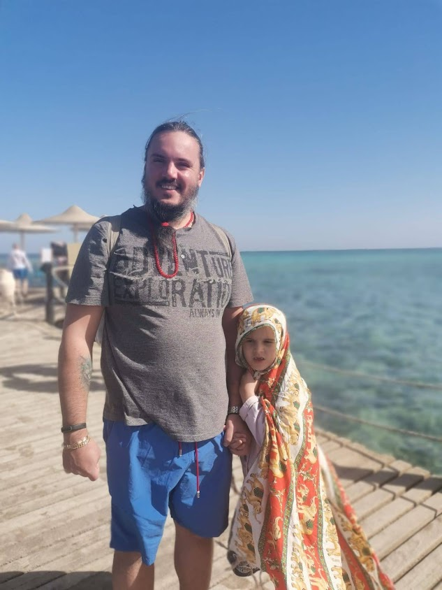
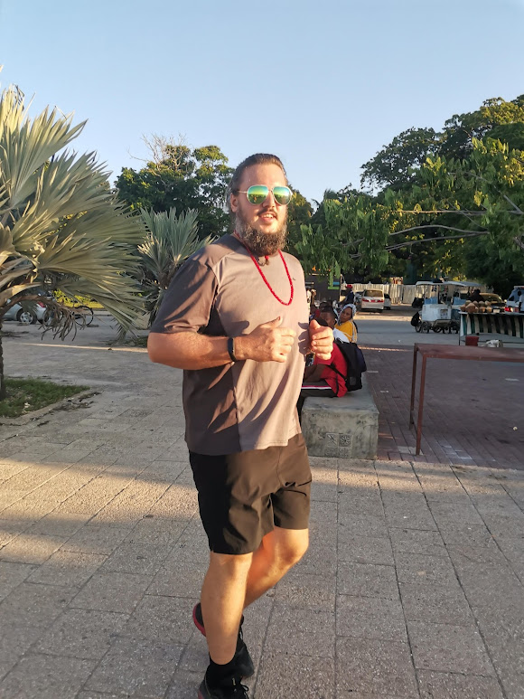

Резюме
Земчиков Иван Игоревич



Навыки. Освою на 100% курс Ruby on Rails от небезызвестной в комьюнити команды Хороший программист.
Сильно развитое критическое мышление. Всегда готов критическески отнестись к своим убеждениям, что снижает вероятность ошибки.
Решительность. Выработав мнение на основании анализа ситуации я немедленно начинаю претворять его в жизнь.
Психическая устойчивость. Регулярно занимаюсь с психологом и слежу за своим психическим здоровьем.
Харизма. Я открытый и искренний человек, со мной приятно общаться, легко вливаюсь в любой коллектив.
Любопытство. Приятно приобретать новые знанияи, люблю ощущение повышения своей компетенции и не боюсь задавать "глупые" вопросы.
Работа программиста мне интересна. Всю жизнь мечтал зарабатывать деньги тем, чем интересуюсь, потому что именно в этом предельно эффективен.
Удалённый формат работы. Часто перемещаюсь по миру в пределах покрытия сети Интернет и хочу постоянно работать.
Достойная оплата. Пассивный доход позволяет мне чувствовать себя спокойно и без зарплаты, но достойная оплата в рамках моей компетенции важна для самоуважения.
Возвышенность целей. Хочу быть уверен, что моя работа полезна людям.